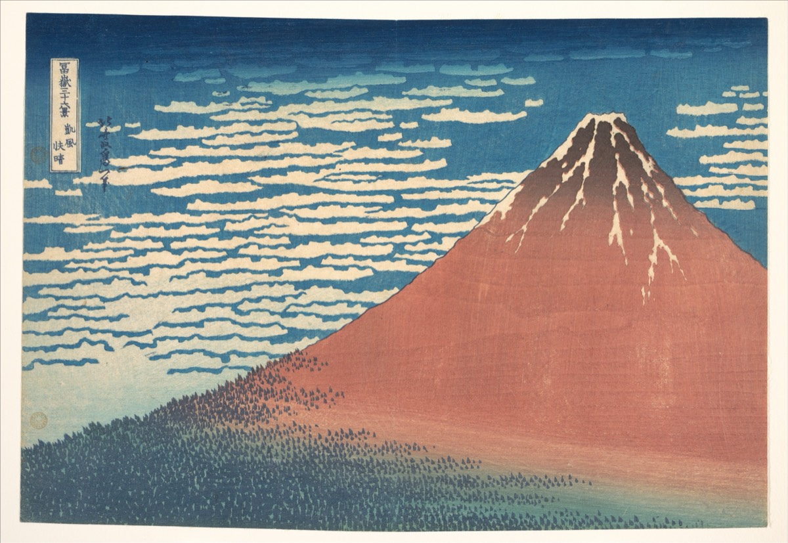

Mindseeder ReadsNo. 1 · Two prints by Hokusai
What catches your eye the second time you look at The Great Wave?
Two woodblock prints from the same series by Katsushika Hokusai, dated around 1830–32. Decide where your eye went first in one, look at the other, then go back to the first.
Look at one print first
Look before you read. Where your eye went in the first few seconds is where this piece starts.

Nothing in the print gives the wave's height in numbers. If it still feels huge, what did you measure it against?
In the boat at the front, a row of people crouch low. The crest of the big wave on the left sits far above the boats, close to the top edge. We know roughly how big a boat and a person are, so the wave beside them can be sized against them.
Another print from the same series
Now a print from the same series.

A mountain with red slopes fills most of the right side, and white clouds lie in rows across the sky. No people, no boats. The colours, and what fills the picture, differ from the first print.
Both prints have a tall title cartouche at top left. The first six characters are the same; only the rest differs.
| Series | Title | |
|---|---|---|
| The Great Wave | 冨嶽三十六景Thirty-six Views of Mount Fuji | 神奈川沖浪裏Under the Wave off Kanagawa |
| Red Fuji | 冨嶽三十六景Thirty-six Views of Mount Fuji | 凱風快晴South Wind, Clear Sky |
The first character is printed as 冨, a variant of 富. The series title names Mount Fuji; the title of The Great Wave does not.
Back to The Great Wave
Keep the mountain that filled Red Fuji in mind, and look for it in the first print.
Your first pick in step 1:
Show where the mountain is
Beyond the trough, a little right of and below the centre. A small mountain with a white peak shows past the boat; its foot is hidden by the boat and the waves.
Once you have found it, look from the small mountain to the wave rising over it and back. Is your first pick still the same? When you size the wave now, do you stop at the boats and people, or does the mountain come in too? People may see this differently.
Our measurement: in the two Met images scaled to 1200px on the long side, the visible mountain is about 77% of the image height in Red Fuji and about 9% in The Great Wave. These are sizes on the picture, not of the prints or the mountain.
What repeats across the two prints is the mountain; what changes a great deal is its size on the picture and what stands beside it. We read it as the same mountain placed to fill one picture and set small beyond the waves in the other. This is a reading you can check on the two prints, not a claim about the artist's intent, and it rests on two prints out of the series.
“Once I found the same mountain in both prints, I stopped looking only at the height of the wave and started comparing the wave with the mountain.”
One observation a reader might make. If you saw it differently, write that difference in your own sentence.
In the app, the two prints become two trees
This piece is a shortened version of mindseeder's Hokusai Mindseeder read. The garden holds 19 notes: nine each in the trees ‘The Great Wave’ and ‘Two prints’, and one conclusion note floating above and between them that joins the two. The garden also includes explanations and objections omitted here, and the introductory note for each print links to its Met collection record. The garden's notes are in Korean.

- Each of the guide card's five steps opens its note. The last step is the conclusion that joins the two trees.
- Step back to see both trees at once, or switch to Office view to read the same notes as cards side by side.
- Opening it makes your own copy on this device. Edit the notes, or add one note of your own about what you saw.
Move between the two trees yourself.
No account needed. On a first visit, choose ‘Start on this device without an account’, then ‘Open’ in the sample window. The notes are in Korean.
Sources
- Katsushika Hokusai (1760–1849), Under the Wave off Kanagawa (Kanagawa oki nami ura), also known as The Great Wave, from the series Thirty-six Views of Mount Fuji (Fugaku sanjūrokkei), ca. 1830–32, woodblock print; ink and color on paper, 25.7 × 37.9 cm. The Metropolitan Museum of Art, H. O. Havemeyer Collection, Bequest of Mrs. H. O. Havemeyer, 1929 (JP1847). Met Open Access public-domain image (CC0), uncropped, scaled to 1200px on the long side.Met object page 45434Collection API
- Katsushika Hokusai (1760–1849), South Wind, Clear Sky (Gaifū kaisei), also known as Red Fuji, from the series Thirty-six Views of Mount Fuji (Fugaku sanjūrokkei), ca. 1830–32, woodblock print; ink and color on paper, 24.4 × 35.6 cm. The Metropolitan Museum of Art, Rogers Fund, 1914 (JP9). Met Open Access public-domain image (CC0), uncropped, scaled to 1200px on the long side.Met object page 36490Collection API
- The Met's Open Access policy: images of public-domain works are released under CC0.Open Access
How this was made
- It starts from the records
- The images and each print's title, date, size and accession number come from The Met's collection records and Open Access images. The cartouche text was read off the prints and translated by us.
- Readings are labelled
- The conclusion that joins the two prints, the measurement and the examples are marked as ours, here and in the garden's notes. Nothing here claims to know the artist's intent.
- The “Really?” job went to someone else
- One AI wrote the article and built the garden. Another had the “Really?” job and checked the details against the Met’s collection record. No art historian reviewed this piece. Spot an error? Let us know at support@mindseeder.io.
Read next
What you miss when you only look at where things areJohn Snow — the pump handle and two water companies
With Hokusai, we looked at where the mountain sits in the picture. In John Snow's 1855 record, you first see where deaths gathered around a pump in Soho, then open a different relation: which water supply split the houses on the same streets. The notes are in Korean.
Open the John Snow garden in the app